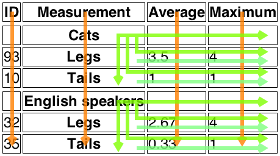

caption elementcolgroup elementcol elementtbody elementthead elementtfoot elementtr elementtd elementth elementtd and th elementstable elementcaption element, followed by zero or more
colgroup elements, followed optionally by a thead element, followed by
either zero or more tbody elements or one or more tr elements, followed
optionally by a tfoot element, optionally intermixed with one or more
script-supporting elements.[Exposed=Window]
interface HTMLTableElement : HTMLElement {
[HTMLConstructor] constructor();
[CEReactions] attribute HTMLTableCaptionElement? caption;
HTMLTableCaptionElement createCaption();
[CEReactions] undefined deleteCaption();
[CEReactions] attribute HTMLTableSectionElement? tHead;
HTMLTableSectionElement createTHead();
[CEReactions] undefined deleteTHead();
[CEReactions] attribute HTMLTableSectionElement? tFoot;
HTMLTableSectionElement createTFoot();
[CEReactions] undefined deleteTFoot();
[SameObject] readonly attribute HTMLCollection tBodies;
HTMLTableSectionElement createTBody();
[SameObject] readonly attribute HTMLCollection rows;
HTMLTableRowElement insertRow(optional long index = -1);
[CEReactions] undefined deleteRow(long index);
// also has obsolete members
};The table element represents data with more than one dimension, in
the form of a table.
The table element takes part in the table
model. Tables have rows, columns, and cells given by their descendants. The rows and
columns form a grid; a table's cells must completely cover that grid without overlap.
Precise rules for determining whether this conformance requirement is met are described in the description of the table model.
Authors are encouraged to provide information describing how to interpret complex tables. Guidance on how to provide such information is given below.
Tables must not be used as layout aids. Historically, some web authors have misused tables in HTML as a way to control their page layout. This usage is non-conforming, because tools attempting to extract tabular data from such documents would obtain very confusing results. In particular, users of accessibility tools like screen readers are likely to find it very difficult to navigate pages with tables used for layout.
There are a variety of alternatives to using HTML tables for layout, such as CSS grid layout, CSS flexible box layout ("flexbox"), CSS multi-column layout, CSS positioning, and the CSS table model. [CSS]
Tables can be complicated to understand and navigate. To help users with this, user agents should clearly delineate cells in a table from each other, unless the user agent has classified the table as a (non-conforming) layout table.
Authors and implementers are encouraged to consider using some of the table design techniques described below to make tables easier to navigate for users.
User agents, especially those that do table analysis on arbitrary content, are encouraged to find heuristics to determine which tables actually contain data and which are merely being used for layout. This specification does not define a precise heuristic, but the following are suggested as possible indicators:
| Feature | Indication |
|---|---|
The use of the role attribute with the value presentation
| Probably a layout table |
The use of the non-conforming border attribute with the non-conforming value 0
| Probably a layout table |
The use of the non-conforming cellspacing and
cellpadding attributes with the value 0
| Probably a layout table |
The use of caption, thead, or th elements
| Probably a non-layout table |
The use of the headers and scope attributes
| Probably a non-layout table |
The use of the non-conforming border attribute with a value other than 0
| Probably a non-layout table |
| Explicit visible borders set using CSS | Probably a non-layout table |
The use of the summary attribute
| Not a good indicator (both layout and non-layout tables have historically been given this attribute) |
It is quite possible that the above suggestions are wrong. Implementers are urged to provide feedback elaborating on their experiences with trying to create a layout table detection heuristic.
If a table element has a (non-conforming) summary attribute, and the user agent has not classified the
table as a layout table, the user agent may report the contents of that attribute to the user.
table.caption [ = value ]Returns the table's caption element.
Can be set, to replace the caption element.
caption = table.createCaption()Ensures the table has a caption element, and returns it.
table.deleteCaption()Ensures the table does not have a caption element.
table.tHead [ = value ]Returns the table's thead element.
Can be set, to replace the thead element. If the new value is not a
thead element, throws a "HierarchyRequestError"
DOMException.
thead = table.createTHead()Ensures the table has a thead element, and returns it.
table.deleteTHead()Ensures the table does not have a thead element.
table.tFoot [ = value ]Returns the table's tfoot element.
Can be set, to replace the tfoot element. If the new value is not a
tfoot element, throws a "HierarchyRequestError"
DOMException.
tfoot = table.createTFoot()Ensures the table has a tfoot element, and returns it.
table.deleteTFoot()Ensures the table does not have a tfoot element.
table.tBodiesReturns an HTMLCollection of the tbody elements of the
table.
tbody = table.createTBody()Creates a tbody element, inserts it into the table, and returns it.
table.rowsReturns an HTMLCollection of the tr elements of the
table.
tr = table.insertRow([ index ])Creates a tr element, along with a tbody if required, inserts them
into the table at the position given by the argument, and returns the tr.
The position is relative to the rows in the table. The index −1, which is the default if the argument is omitted, is equivalent to inserting at the end of the table.
If the given position is less than −1 or greater than the number of rows, throws an
"IndexSizeError" DOMException.
table.deleteRow(index)Removes the tr element with the given position in the table.
The position is relative to the rows in the table. The index −1 is equivalent to deleting the last row of the table.
If the given position is less than −1 or greater than the index of the last row, or if
there are no rows, throws an "IndexSizeError"
DOMException.
In all of the following attribute and method definitions, when an element is to be
table-created, that means to create an element given the
table element's node document, the given local name, and the HTML
namespace.
The caption
IDL attribute must return, on getting, the first caption element child of the
table element, if any, or null otherwise. On setting, the first caption
element child of the table element, if any, must be removed, and the new value, if
not null, must be inserted as the first node of the table element.
The createCaption() method must return the first
caption element child of the table element, if any; otherwise a new
caption element must be table-created, inserted as the first node of the
table element, and then returned.
The deleteCaption() method must remove the first
caption element child of the table element, if any.
The tHead IDL
attribute must return, on getting, the first thead element child of the
table element, if any, or null otherwise. On setting, if the new value is null or a
thead element, the first thead element child of the table
element, if any, must be removed, and the new value, if not null, must be inserted immediately
before the first element in the table element that is neither a caption
element nor a colgroup element, if any, or at the end of the table if there are no
such elements. If the new value is neither null nor a thead element, then a
"HierarchyRequestError" DOMException must be thrown
instead.
The createTHead() method must return the first
thead element child of the table element, if any; otherwise a new
thead element must be table-created and inserted immediately before the
first element in the table element that is neither a caption element nor
a colgroup element, if any, or at the end of the table if there are no such elements,
and then that new element must be returned.
The tFoot IDL
attribute must return, on getting, the first tfoot element child of the
table element, if any, or null otherwise. On setting, if the new value is null or a
tfoot element, the first tfoot element child of the table
element, if any, must be removed, and the new value, if not null, must be inserted at the end of
the table. If the new value is neither null nor a tfoot element, then a
"HierarchyRequestError" DOMException must be thrown
instead.
The createTFoot() method must return the first
tfoot element child of the table element, if any; otherwise a new
tfoot element must be table-created and inserted at the end of the
table, and then that new element must be returned.
The tBodies
attribute must return an HTMLCollection rooted at the table node, whose
filter matches only tbody elements that are children of the table
element.
The createTBody() method must table-create a new tbody element, insert it immediately
after the last tbody element child in the table element, if any, or at
the end of the table element if the table element has no
tbody element children, and then must return the new tbody element.
The rows
attribute must return an HTMLCollection rooted at the table node, whose
filter matches only tr elements that are either children of the table
element, or children of thead, tbody, or tfoot elements
that are themselves children of the table element. The elements in the collection
must be ordered such that those elements whose parent is a thead are included first,
in tree order, followed by those elements whose parent is either a table
or tbody element, again in tree order, followed finally by those
elements whose parent is a tfoot element, still in tree order.
The behavior of the insertRow(index) method depends on the state
of the table. When it is called, the method must act as required by the first item in the
following list of conditions that describes the state of the table and the index
argument:
rows collection:IndexSizeError"
DOMException.rows collection has zero elements in it, and the
table has no tbody elements in it:tbody
element, then table-create a tr element, then
append the tr element to the tbody element, then append the
tbody element to the table element, and finally return the
tr element.rows collection has zero elements in it:tr element,
append it to the last tbody element in the table, and return the tr
element.rows collection:tr element,
and append it to the parent of the last tr element in the rows collection. Then, the newly created tr element
must be returned.tr element,
insert it immediately before the indexth tr element in the rows collection, in the same parent, and finally must return the
newly created tr element.When the deleteRow(index) method is called, the user
agent must run the following steps:
If index is less than −1 or greater than or equal to the number of
elements in the rows collection, then throw an
"IndexSizeError" DOMException.
If index is −1, then remove
the last element in the rows collection from its parent, or
do nothing if the rows collection is empty.
Otherwise, remove the indexth element
in the rows collection from its parent.
Here is an example of a table being used to mark up a Sudoku puzzle. Observe the lack of headers, which are not necessary in such a table.
<style>
#sudoku { border-collapse: collapse; border: solid thick; }
#sudoku colgroup, table#sudoku tbody { border: solid medium; }
#sudoku td { border: solid thin; height: 1.4em; width: 1.4em; text-align: center; padding: 0; }
</style>
<h1>Today's Sudoku</h1>
<table id="sudoku">
<colgroup><col><col><col>
<colgroup><col><col><col>
<colgroup><col><col><col>
<tbody>
<tr> <td> 1 <td> <td> 3 <td> 6 <td> <td> 4 <td> 7 <td> <td> 9
<tr> <td> <td> 2 <td> <td> <td> 9 <td> <td> <td> 1 <td>
<tr> <td> 7 <td> <td> <td> <td> <td> <td> <td> <td> 6
<tbody>
<tr> <td> 2 <td> <td> 4 <td> <td> 3 <td> <td> 9 <td> <td> 8
<tr> <td> <td> <td> <td> <td> <td> <td> <td> <td>
<tr> <td> 5 <td> <td> <td> 9 <td> <td> 7 <td> <td> <td> 1
<tbody>
<tr> <td> 6 <td> <td> <td> <td> 5 <td> <td> <td> <td> 2
<tr> <td> <td> <td> <td> <td> 7 <td> <td> <td> <td>
<tr> <td> 9 <td> <td> <td> 8 <td> <td> 2 <td> <td> <td> 5
</table>For tables that consist of more than just a grid of cells with headers in the first row and headers in the first column, and for any table in general where the reader might have difficulty understanding the content, authors should include explanatory information introducing the table. This information is useful for all users, but is especially useful for users who cannot see the table, e.g. users of screen readers.
Such explanatory information should introduce the purpose of the table, outline its basic cell structure, highlight any trends or patterns, and generally teach the user how to use the table.
For instance, the following table:
| Negative | Characteristic | Positive |
|---|---|---|
| Sad | Mood | Happy |
| Failing | Grade | Passing |
...might benefit from a description explaining the way the table is laid out, something like "Characteristics are given in the second column, with the negative side in the left column and the positive side in the right column".
There are a variety of ways to include this information, such as:
<p>In the following table, characteristics are given in the second
column, with the negative side in the left column and the positive
side in the right column.</p>
<table>
<caption>Characteristics with positive and negative sides</caption>
<thead>
<tr>
<th id="n"> Negative
<th> Characteristic
<th> Positive
<tbody>
<tr>
<td headers="n r1"> Sad
<th id="r1"> Mood
<td> Happy
<tr>
<td headers="n r2"> Failing
<th id="r2"> Grade
<td> Passing
</table>caption<table>
<caption>
<strong>Characteristics with positive and negative sides.</strong>
<p>Characteristics are given in the second column, with the
negative side in the left column and the positive side in the right
column.</p>
</caption>
<thead>
<tr>
<th id="n"> Negative
<th> Characteristic
<th> Positive
<tbody>
<tr>
<td headers="n r1"> Sad
<th id="r1"> Mood
<td> Happy
<tr>
<td headers="n r2"> Failing
<th id="r2"> Grade
<td> Passing
</table>caption, in a details element<table>
<caption>
<strong>Characteristics with positive and negative sides.</strong>
<details>
<summary>Help</summary>
<p>Characteristics are given in the second column, with the
negative side in the left column and the positive side in the right
column.</p>
</details>
</caption>
<thead>
<tr>
<th id="n"> Negative
<th> Characteristic
<th> Positive
<tbody>
<tr>
<td headers="n r1"> Sad
<th id="r1"> Mood
<td> Happy
<tr>
<td headers="n r2"> Failing
<th id="r2"> Grade
<td> Passing
</table>figure<figure>
<figcaption>Characteristics with positive and negative sides</figcaption>
<p>Characteristics are given in the second column, with the
negative side in the left column and the positive side in the right
column.</p>
<table>
<thead>
<tr>
<th id="n"> Negative
<th> Characteristic
<th> Positive
<tbody>
<tr>
<td headers="n r1"> Sad
<th id="r1"> Mood
<td> Happy
<tr>
<td headers="n r2"> Failing
<th id="r2"> Grade
<td> Passing
</table>
</figure>figure's figcaption<figure>
<figcaption>
<strong>Characteristics with positive and negative sides</strong>
<p>Characteristics are given in the second column, with the
negative side in the left column and the positive side in the right
column.</p>
</figcaption>
<table>
<thead>
<tr>
<th id="n"> Negative
<th> Characteristic
<th> Positive
<tbody>
<tr>
<td headers="n r1"> Sad
<th id="r1"> Mood
<td> Happy
<tr>
<td headers="n r2"> Failing
<th id="r2"> Grade
<td> Passing
</table>
</figure>Authors may also use other techniques, or combinations of the above techniques, as appropriate.
The best option, of course, rather than writing a description explaining the way the table is laid out, is to adjust the table such that no explanation is needed.
In the case of the table used in the examples above, a simple rearrangement of the table so
that the headers are on the top and left sides removes the need for an explanation as well as
removing the need for the use of headers attributes:
<table>
<caption>Characteristics with positive and negative sides</caption>
<thead>
<tr>
<th> Characteristic
<th> Negative
<th> Positive
<tbody>
<tr>
<th> Mood
<td> Sad
<td> Happy
<tr>
<th> Grade
<td> Failing
<td> Passing
</table>Good table design is key to making tables more readable and usable.
In visual media, providing column and row borders and alternating row backgrounds can be very effective to make complicated tables more readable.
For tables with large volumes of numeric content, using monospaced fonts can help users see patterns, especially in situations where a user agent does not render the borders. (Unfortunately, for historical reasons, not rendering borders on tables is a common default.)
In speech media, table cells can be distinguished by reporting the corresponding headers before reading the cell's contents, and by allowing users to navigate the table in a grid fashion, rather than serializing the entire contents of the table in source order.
Authors are encouraged to use CSS to achieve these effects.
User agents are encouraged to render tables using these techniques whenever the page does not use CSS and the table is not classified as a layout table.
caption elementtable element.table elements.caption element's end tag can be omitted if
the caption element is not immediately followed by ASCII whitespace or a
comment.[Exposed=Window]
interface HTMLTableCaptionElement : HTMLElement {
[HTMLConstructor] constructor();
// also has obsolete members
};The caption element represents the title of the table
that is its parent, if it has a parent and that is a table element.
The caption element takes part in the table model.
When a table element is the only content in a figure element other
than the figcaption, the caption element should be omitted in favor of
the figcaption.
A caption can introduce context for a table, making it significantly easier to understand.
Consider, for instance, the following table:
| 1 | 2 | 3 | 4 | 5 | 6 | |
|---|---|---|---|---|---|---|
| 1 | 2 | 3 | 4 | 5 | 6 | 7 |
| 2 | 3 | 4 | 5 | 6 | 7 | 8 |
| 3 | 4 | 5 | 6 | 7 | 8 | 9 |
| 4 | 5 | 6 | 7 | 8 | 9 | 10 |
| 5 | 6 | 7 | 8 | 9 | 10 | 11 |
| 6 | 7 | 8 | 9 | 10 | 11 | 12 |
In the abstract, this table is not clear. However, with a caption giving the table's number (for reference in the main prose) and explaining its use, it makes more sense:
<caption>
<p>Table 1.
<p>This table shows the total score obtained from rolling two
six-sided dice. The first row represents the value of the first die,
the first column the value of the second die. The total is given in
the cell that corresponds to the values of the two dice.
</caption>This provides the user with more context:
| 1 | 2 | 3 | 4 | 5 | 6 | |
|---|---|---|---|---|---|---|
| 1 | 2 | 3 | 4 | 5 | 6 | 7 |
| 2 | 3 | 4 | 5 | 6 | 7 | 8 |
| 3 | 4 | 5 | 6 | 7 | 8 | 9 |
| 4 | 5 | 6 | 7 | 8 | 9 | 10 |
| 5 | 6 | 7 | 8 | 9 | 10 | 11 |
| 6 | 7 | 8 | 9 | 10 | 11 | 12 |
colgroup elementtable element, after any
caption elements and before any thead,
tbody, tfoot, and tr
elements.span attribute is present: Nothing.span attribute is absent: Zero or more col and template elements.colgroup element's start tag can be
omitted if the first thing inside the colgroup element is a col element,
and if the element is not immediately preceded by another colgroup element whose
end tag has been omitted. (It can't be omitted if the element
is empty.)colgroup element's end tag can be omitted
if the colgroup element is not immediately followed by ASCII whitespace
or a comment.span — Number of columns spanned by the element
[Exposed=Window]
interface HTMLTableColElement : HTMLElement {
[HTMLConstructor] constructor();
[CEReactions, Reflect, ReflectDefault=1, ReflectRange=(1, 1000)] attribute unsigned long span;
// also has obsolete members
};The colgroup element represents a group of one or more columns in the table that is its parent, if it has a
parent and that is a table element.
If the colgroup element contains no col elements, then the element
may have a span
content attribute specified, whose value must be a valid non-negative integer greater
than zero and less than or equal to 1000.
The colgroup element and its span
attribute take part in the table model.
col elementcolgroup element that doesn't have
a span attribute.span — Number of columns spanned by the element
HTMLTableColElement, as defined for colgroup elements.If a col element has a parent and that is a colgroup element that
itself has a parent that is a table element, then the col element
represents one or more columns in the column group represented by that colgroup.
The element may have a span content attribute specified, whose value must be a
valid non-negative integer greater than zero and less than or equal to 1000.
The col element and its span attribute take
part in the table model.
tbody elementtable element, after any
caption, colgroup, and
thead elements, but only if there are no
tr elements that are children of the
table element.tr and script-supporting elements.tbody element's start tag can be omitted
if the first thing inside the tbody element is a tr element, and if the
element is not immediately preceded by a tbody, thead, or
tfoot element whose end tag has been omitted. (It
can't be omitted if the element is empty.)tbody element's end tag can be omitted if
the tbody element is immediately followed by a tbody or
tfoot element, or if there is no more content in the parent element.[Exposed=Window]
interface HTMLTableSectionElement : HTMLElement {
[HTMLConstructor] constructor();
[SameObject] readonly attribute HTMLCollection rows;
HTMLTableRowElement insertRow(optional long index = -1);
[CEReactions] undefined deleteRow(long index);
// also has obsolete members
};The
HTMLTableSectionElement interface is also used for thead and
tfoot elements.
The tbody element represents a block of rows that consist of a
body of data for the parent table element, if the tbody element has a
parent and it is a table.
The tbody element takes part in the table model.
tbody.rowsReturns an HTMLCollection of the tr elements of the table
section.
tr = tbody.insertRow([ index ])Creates a tr element, inserts it into the table section at the position given by
the argument, and returns the tr.
The position is relative to the rows in the table section. The index −1, which is the default if the argument is omitted, is equivalent to inserting at the end of the table section.
If the given position is less than −1 or greater than the number of rows, throws an
"IndexSizeError" DOMException.
tbody.deleteRow(index)Removes the tr element with the given position in the table section.
The position is relative to the rows in the table section. The index −1 is equivalent to deleting the last row of the table section.
If the given position is less than −1 or greater than the index of the last row, or if
there are no rows, throws an "IndexSizeError"
DOMException.
The rows attribute must return an HTMLCollection
rooted at this element, whose filter matches only tr elements that are children of
this element.
The insertRow(index) method must act as
follows:
If index is less than −1 or greater than the number of elements in the
rows collection, throw an
"IndexSizeError" DOMException.
Let table row be the result of creating an
element given this element's node document, "tr", and
the HTML namespace.
If index is −1 or equal to the number of items in the rows collection, then append table row to this element.
Otherwise, insert table row as a
child of this element, immediately before the indexth tr element in the
rows collection.
Return table row.
The deleteRow(index) method must, when invoked,
act as follows:
If index is less than −1 or greater than or equal to the number of
elements in the rows collection, then throw an
"IndexSizeError" DOMException.
If index is −1, then remove
the last element in the rows collection from this
element, or do nothing if the rows collection is
empty.
Otherwise, remove the indexth element
in the rows collection from this element.
thead elementtable element, after any
caption, and colgroup
elements and before any tbody, tfoot, and
tr elements, but only if there are no other
thead elements that are children of the
table element.tr and script-supporting elements.thead element's end tag can be omitted if
the thead element is immediately followed by a tbody or
tfoot element.HTMLTableSectionElement, as defined for tbody elements.The thead element represents the block of rows that consist of
the column labels (headers) and any ancillary non-header cells for the parent table
element, if the thead element has a parent and it is a table.
The thead element takes part in the table model.
This example shows a thead element being used. Notice the use of both
th and td elements in the thead element: the first row is
the headers, and the second row is an explanation of how to fill in the table.
<table>
<caption> School auction sign-up sheet </caption>
<thead>
<tr>
<th><label for=e1>Name</label>
<th><label for=e2>Product</label>
<th><label for=e3>Picture</label>
<th><label for=e4>Price</label>
<tr>
<td>Your name here
<td>What are you selling?
<td>Link to a picture
<td>Your reserve price
<tbody>
<tr>
<td>Ms Danus
<td>Doughnuts
<td><img src="https://example.com/mydoughnuts.png" title="Doughnuts from Ms Danus">
<td>$45
<tr>
<td><input id=e1 type=text name=who required form=f>
<td><input id=e2 type=text name=what required form=f>
<td><input id=e3 type=url name=pic form=f>
<td><input id=e4 type=number step=0.01 min=0 value=0 required form=f>
</table>
<form id=f action="/auction.cgi">
<input type=button name=add value="Submit">
</form>tfoot elementtable element, after any
caption, colgroup, thead,
tbody, and tr elements, but only if there
are no other tfoot elements that are children of the
table element.tr and script-supporting elements.tfoot element's end tag can be omitted if
there is no more content in the parent element.HTMLTableSectionElement, as defined for tbody elements.The tfoot element represents the block of rows that consist of
the column summaries (footers) for the parent table element, if the
tfoot element has a parent and it is a table.
The tfoot element takes part in the table
model.
tr elementthead element.tbody element.tfoot element.table element, after any
caption, colgroup, and thead
elements, but only if there are no tbody elements that
are children of the table element.td, th, and script-supporting elements.tr element's end tag can be omitted if the
tr element is immediately followed by another tr element, or if there is
no more content in the parent element.[Exposed=Window]
interface HTMLTableRowElement : HTMLElement {
[HTMLConstructor] constructor();
readonly attribute long rowIndex;
readonly attribute long sectionRowIndex;
[SameObject] readonly attribute HTMLCollection cells;
HTMLTableCellElement insertCell(optional long index = -1);
[CEReactions] undefined deleteCell(long index);
// also has obsolete members
};The tr element represents a row of
cells in a table.
The tr element takes part in the table model.
tr.rowIndexReturns the position of the row in the table's rows
list.
Returns −1 if the element isn't in a table.
tr.sectionRowIndexReturns the position of the row in the table section's rows list.
Returns −1 if the element isn't in a table section.
tr.cellsReturns an HTMLCollection of the td and th elements of
the row.
cell = tr.insertCell([ index ])Creates a td element, inserts it into the table row at the position given by the
argument, and returns the td.
The position is relative to the cells in the row. The index −1, which is the default if the argument is omitted, is equivalent to inserting at the end of the row.
If the given position is less than −1 or greater than the number of cells, throws an
"IndexSizeError" DOMException.
tr.deleteCell(index)Removes the td or th element with the given position in the
row.
The position is relative to the cells in the row. The index −1 is equivalent to deleting the last cell of the row.
If the given position is less than −1 or greater than the index of the last cell, or
if there are no cells, throws an "IndexSizeError"
DOMException.
The rowIndex attribute must, if this element has a parent
table element, or a parent tbody, thead, or
tfoot element and a grandparent table element, return the index
of this tr element in that table element's rows collection. If there is no such table element,
then the attribute must return −1.
The sectionRowIndex attribute must, if this element has a
parent table, tbody, thead, or tfoot element,
return the index of the tr element in the parent element's rows collection (for tables, that's HTMLTableElement's rows collection; for table sections, that's
HTMLTableSectionElement's rows
collection). If there is no such parent element, then the attribute must return −1.
The cells
attribute must return an HTMLCollection rooted at this tr element, whose
filter matches only td and th elements that are children of the
tr element.
The insertCell(index) method must act as
follows:
If index is less than −1 or greater than the number of elements in
the cells collection, then throw an
"IndexSizeError" DOMException.
Let table cell be the result of creating an
element given this tr element's node document, "td", and the HTML namespace.
If index is equal to −1 or equal to the number of items in cells collection, then append table cell to this tr
element.
Otherwise, insert table cell as a
child of this tr element, immediately before the indexth td
or th element in the cells collection.
Return table cell.
The deleteCell(index) method must act as
follows:
If index is less than −1 or greater than or equal to the number of
elements in the cells collection, then throw an
"IndexSizeError" DOMException.
If index is −1, then remove
the last element in the cells collection from its
parent, or do nothing if the cells collection is
empty.
Otherwise, remove the indexth element
in the cells collection from its parent.
td elementtr element.td element's end tag can be omitted if the
td element is immediately followed by a td or th element,
or if there is no more content in the parent element.colspan — Number of columns that the cell is to span
rowspan — Number of rows that the cell is to span
headers — The header cells for this cell
[Exposed=Window]
interface HTMLTableCellElement : HTMLElement {
[HTMLConstructor] constructor();
[CEReactions, Reflect, ReflectDefault=1, ReflectRange=(1, 1000)] attribute unsigned long colSpan;
[CEReactions, Reflect, ReflectDefault=1, ReflectRange=(0, 65534)] attribute unsigned long rowSpan;
[CEReactions, Reflect] attribute DOMString headers;
readonly attribute long cellIndex;
[CEReactions] attribute DOMString scope; // only conforming for th elements
[CEReactions, Reflect] attribute DOMString abbr; // only conforming for th elements
// also has obsolete members
};The
HTMLTableCellElement interface is also used for th elements.
The td element represents a data cell in a table.
The td element and its colspan, rowspan, and headers
attributes take part in the table model.
User agents, especially in non-visual environments or where displaying the table as a 2D grid
is impractical, may give the user context for the cell when rendering the contents of a cell; for
instance, giving its position in the table model, or listing the cell's header cells
(as determined by the algorithm for assigning header cells). When a cell's header
cells are being listed, user agents may use the value of abbr
attributes on those header cells, if any, instead of the contents of the header cells
themselves.
In this example, we see a snippet of a web application consisting of a grid of editable cells
(essentially a simple spreadsheet). One of the cells has been configured to show the sum of the
cells above it. Three have been marked as headings, which use th elements instead of
td elements. A script would attach event handlers to these elements to maintain the
total.
<table>
<tr>
<th><input value="Name">
<th><input value="Paid ($)">
<tr>
<td><input value="Jeff">
<td><input value="14">
<tr>
<td><input value="Britta">
<td><input value="9">
<tr>
<td><input value="Abed">
<td><input value="25">
<tr>
<td><input value="Shirley">
<td><input value="2">
<tr>
<td><input value="Annie">
<td><input value="5">
<tr>
<td><input value="Troy">
<td><input value="5">
<tr>
<td><input value="Pierce">
<td><input value="1000">
<tr>
<th><input value="Total">
<td><output value="1060">
</table>th elementtr element.header, footer,
sectioning content, or heading content descendants.th element's end tag can be omitted if the
th element is immediately followed by a td or th element,
or if there is no more content in the parent element.colspan — Number of columns that the cell is to span
rowspan — Number of rows that the cell is to span
headers — The header cells for this cell
scope — Specifies which cells the header cell applies to
abbr — Alternative label to use for the header cell when referencing the cell in other contexts
HTMLTableCellElement, as defined for td elements.The th element represents a header cell in a table.
The th element may have a scope content attribute specified.
The scope attribute is an enumerated attribute
with the following keywords and states:
| Keyword | State | Brief description |
|---|---|---|
row
| Row | The header cell applies to some of the subsequent cells in the same row(s). |
col
| Column | The header cell applies to some of the subsequent cells in the same column(s). |
rowgroup
| Row Group | The header cell applies to all the remaining cells in the row group. |
colgroup
| Column Group | The header cell applies to all the remaining cells in the column group. |
The attribute's missing value default and invalid value default are both the Auto state. (In this state the header cell applies to a set of cells selected based on context.)
A th element's scope attribute must not be in
the Row Group state if the element is not anchored in
a row group, nor in the Column Group state if the element is not anchored in a
column group.
The th element may have an abbr content attribute specified. Its value must be an
alternative label for the header cell, to be used when referencing the cell in other contexts
(e.g. when describing the header cells that apply to a data cell). It is typically an abbreviated
form of the full header cell, but can also be an expansion, or merely a different phrasing.
The th element and its colspan, rowspan, headers, and
scope attributes take part in the table model.
The following example shows how the scope attribute's rowgroup value affects which data cells a header cell
applies to.
Here is a markup fragment showing a table:
<table>
<thead>
<tr> <th> ID <th> Measurement <th> Average <th> Maximum
<tbody>
<tr> <td> <th scope=rowgroup> Cats <td> <td>
<tr> <td> 93 <th> Legs <td> 3.5 <td> 4
<tr> <td> 10 <th> Tails <td> 1 <td> 1
<tbody>
<tr> <td> <th scope=rowgroup> English speakers <td> <td>
<tr> <td> 32 <th> Legs <td> 2.67 <td> 4
<tr> <td> 35 <th> Tails <td> 0.33 <td> 1
</table>This would result in the following table:
| ID | Measurement | Average | Maximum |
|---|---|---|---|
| Cats | |||
| 93 | Legs | 3.5 | 4 |
| 10 | Tails | 1 | 1 |
| English speakers | |||
| 32 | Legs | 2.67 | 4 |
| 35 | Tails | 0.33 | 1 |
The headers in the first row all apply directly down to the rows in their column.
The headers with a scope attribute in the Row Group state apply to all the cells in their row
group other than the cells in the first column.
The remaining headers apply just to the cells to the right of them.

td and th elementsThe td and th elements may have a colspan content attribute specified, whose value must be a
valid non-negative integer greater than zero and less than or equal to 1000.
The td and th elements may also have a rowspan content attribute specified,
whose value must be a valid non-negative integer less than or equal to 65534. For
this attribute, the value zero means that the cell is to span all the remaining rows in the row
group.
These attributes give the number of columns and rows respectively that the cell is to span. These attributes must not be used to overlap cells, as described in the description of the table model.
The td and th element may have a headers content attribute specified. The headers attribute, if specified, must contain a string
consisting of an unordered set of unique space-separated tokens, none of which are
identical to another token and each of which must have the value of an ID of a th element taking part in the same table as the td or th element (as defined by the table model).
A th element with ID id is
said to be directly targeted by all td and th elements in the
same table that have headers attributes whose values include as one of their tokens
the ID id. A th element A is said to be targeted by a th or td element
B if either A is directly targeted by B or if there exists an element C that is itself
targeted by the element B and A is directly
targeted by C.
A th element must not be targeted by itself.
The colspan, rowspan, and headers
attributes take part in the table model.
cell.cellIndexReturns the position of the cell in the row's cells list.
This does not necessarily correspond to the x-position of the cell in the table,
since earlier cells might cover multiple rows or columns.
Returns −1 if the element isn't in a row.
The cellIndex IDL attribute must, if the element has a parent
tr element, return the index of the cell's element in the parent element's cells collection. If there is no such parent element, then the
attribute must return −1.
The scope
IDL attribute must reflect the content attribute of the same name, limited to
only known values.
The various table elements and their content attributes together define the table model.
A table consists of cells aligned on a two-dimensional grid of
slots with coordinates (x, y). The grid is finite, and is either empty or has one or more slots. If the grid
has one or more slots, then the x coordinates are always in the range 0 ≤ x < xwidth, and the y coordinates are always in the
range 0 ≤ y < yheight. If one or both of xwidth and yheight are zero, then the
table is empty (has no slots). Tables correspond to table elements.
A cell is a set of slots anchored at a slot (cellx, celly), and with
a particular width and height such that the cell covers
all the slots with coordinates (x, y) where cellx ≤ x < cellx+width and celly ≤ y < celly+height. Cells can either be data cells
or header cells. Data cells correspond to td elements, and header cells
correspond to th elements. Cells of both types can have zero or more associated
header cells.
It is possible, in certain error cases, for two cells to occupy the same slot.
A row is a complete set of slots from x=0 to x=xwidth-1, for a particular value of y. Rows usually
correspond to tr elements, though a row group
can have some implied rows at the end in some cases involving
cells spanning multiple rows.
A column is a complete set of slots from y=0 to y=yheight-1, for a particular value of x. Columns can
correspond to col elements. In the absence of col elements, columns are
implied.
A row group is a set of rows anchored at a slot (0, groupy) with a particular height such that the row group
covers all the slots with coordinates (x, y) where 0 ≤ x < xwidth and groupy ≤ y < groupy+height. Row groups correspond to
tbody, thead, and tfoot elements. Not every row is
necessarily in a row group.
A column group is a set of columns anchored at a slot (groupx, 0) with a particular width such that the column group
covers all the slots with coordinates (x, y) where groupx ≤ x < groupx+width and 0 ≤ y < yheight. Column
groups correspond to colgroup elements. Not every column is necessarily in a column
group.
Row groups cannot overlap each other. Similarly, column groups cannot overlap each other.
A cell cannot cover slots that are from two or more row groups. It is, however, possible for a cell to be in multiple column groups. All the slots that form part of one cell are part of zero or one row groups and zero or more column groups.
In addition to cells, columns, rows, row groups, and column
groups, tables can have a caption element
associated with them. This gives the table a heading, or legend.
A table model error is an error with the data represented by table
elements and their descendants. Documents must not have table model errors.
To determine which elements correspond to which slots in a table associated with a table element, to determine the
dimensions of the table (xwidth and yheight), and to determine if there are any table model errors, user agents must use the following algorithm:
Let xwidth be 0.
Let yheight be 0.
Let pending tfoot elements be a list of tfoot
elements, initially empty.
Let the table be the table represented
by the table element. The xwidth and yheight variables give the table's
dimensions. The table is initially empty.
If the table element has no children elements, then return the
table (which will be empty).
Associate the first caption element child of the table element with
the table. If there are no such children, then it has no associated
caption element.
Let the current element be the first element child of the
table element.
If a step in this algorithm ever requires the current element to be advanced to the next child of the table when
there is no such next child, then the user agent must jump to the step labeled end, near
the end of this algorithm.
While the current element is not one of the following elements, advance the current element to the next
child of the table:
If the current element is a colgroup, follow these
substeps:
Column groups: Process the current element according to the appropriate case below:
col element childrenFollow these steps:
Let xstart have the value of xwidth.
Let the current column be the first col element child
of the colgroup element.
Columns: If the current column col element has
a span attribute, then parse its value using the
rules for parsing non-negative integers.
If the result of parsing the value is not an error or zero, then let span be that value.
Otherwise, if the col element has no span attribute, or if trying to parse the attribute's value
resulted in an error or zero, then let span be 1.
If span is greater than 1000, let it be 1000 instead.
Increase xwidth by span.
Let the last span columns in
the table correspond to the current column
col element.
If current column is not the last col element child of
the colgroup element, then let the current column be the
next col element child of the colgroup element, and return to
the step labeled columns.
Let all the last columns in the
table from x=xstart to
x=xwidth-1 form a new column group, anchored at the slot (xstart, 0), with width xwidth-xstart, corresponding to the colgroup element.
col element childrenIf the colgroup element has a span
attribute, then parse its value using the rules for parsing non-negative
integers.
If the result of parsing the value is not an error or zero, then let span be that value.
Otherwise, if the colgroup element has no span attribute, or if trying to parse the attribute's
value resulted in an error or zero, then let span be 1.
If span is greater than 1000, let it be 1000 instead.
Increase xwidth by span.
Let the last span columns in
the table form a new column
group, anchored at the slot (xwidth-span, 0), with width span, corresponding to the colgroup element.
While the current element is not one of the following elements, advance the current element to the
next child of the table:
If the current element is a colgroup element, jump to the
step labeled column groups above.
Let ycurrent be 0.
Let the list of downward-growing cells be an empty list.
Rows: While the current element is not one of the following
elements, advance the current
element to the next child of the table:
If the current element is a tr, then run the algorithm
for processing rows, advance the current element to the next child of the table, and return to the
step labeled rows.
Run the algorithm for ending a row group.
If the current element is a tfoot, then add that element to
the list of pending tfoot elements, advance the current element to the next
child of the table, and return to the step labeled rows.
The current element is either a thead or a
tbody.
Run the algorithm for processing row groups.
Return to the step labeled rows.
End: For each tfoot element in the list of pending
tfoot elements, in tree order, run the algorithm for processing row
groups.
If there exists a row or column in the table containing only slots that do not have a cell anchored to them, then this is a table model error.
Return the table.
The algorithm for processing row groups, which is invoked by the set of steps above
for processing thead, tbody, and tfoot elements, is:
Let ystart have the value of yheight.
For each tr element that is a child of the element being processed, in tree
order, run the algorithm for processing rows.
If yheight > ystart, then let all the last rows in the table from y=ystart to y=yheight-1 form a new row group, anchored at the slot with coordinate (0, ystart), with height yheight-ystart, corresponding to the element being processed.
Run the algorithm for ending a row group.
The algorithm for ending a row group, which is invoked by the set of steps above when starting and ending a block of rows, is:
While ycurrent is less than yheight, follow these steps:
Increase ycurrent by 1.
Empty the list of downward-growing cells.
The algorithm for processing rows, which is invoked by the set of steps above for
processing tr elements, is:
If yheight is equal to ycurrent, then increase yheight by 1. (ycurrent is never greater than yheight.)
Let xcurrent be 0.
If the tr element being processed has no td or th
element children, then increase ycurrent by 1, abort
this set of steps, and return to the algorithm above.
Let current cell be the first td or th element child
in the tr element being processed.
Cells: While xcurrent is less than xwidth and the slot with coordinate (xcurrent, ycurrent) already has a cell assigned to it, increase xcurrent by 1.
If xcurrent is equal to xwidth, increase xwidth by 1. (xcurrent is never greater than xwidth.)
If the current cell has a colspan
attribute, then parse that attribute's
value, and let colspan be the result.
If parsing that value failed, or returned zero, or if the attribute is absent, then let colspan be 1, instead.
If colspan is greater than 1000, let it be 1000 instead.
If the current cell has a rowspan
attribute, then parse that attribute's
value, and let rowspan be the result.
If parsing that value failed or if the attribute is absent, then let rowspan be 1, instead.
If rowspan is greater than 65534, let it be 65534 instead.
Let cell grows downward be false.
If rowspan is zero, then set cell grows downward to true and set rowspan to 1.
If xwidth < xcurrent+colspan, then let xwidth be xcurrent+colspan.
If yheight < ycurrent+rowspan, then let yheight be ycurrent+rowspan.
Let the slots with coordinates (x, y) such that xcurrent ≤ x < xcurrent+colspan and ycurrent ≤ y < ycurrent+rowspan be covered by a new cell c, anchored at (xcurrent, ycurrent), which has width colspan and height rowspan, corresponding to the current cell element.
If the current cell element is a th element, let this new
cell c be a header cell; otherwise, let it be a data cell.
To establish which header cells apply to the current cell element, use the algorithm for assigning header cells described in the next section.
If any of the slots involved already had a cell covering them, then this is a table model error. Those slots now have two cells overlapping.
If cell grows downward is true, then add the tuple {c, xcurrent, colspan} to the list of downward-growing cells.
Increase xcurrent by colspan.
If current cell is the last td or th element child in
the tr element being processed, then increase ycurrent by 1, abort this set of steps, and return to the algorithm
above.
Let current cell be the next td or th element child
in the tr element being processed.
Return to the step labeled cells.
When the algorithms above require the user agent to run the algorithm for growing downward-growing cells, the user agent must, for each {cell, cellx, width} tuple in the list of downward-growing cells, if any, extend the cell cell so that it also covers the slots with coordinates (x, ycurrent), where cellx ≤ x < cellx+width.
Each cell can be assigned zero or more header cells. The algorithm for assigning header cells to a cell principal cell is as follows.
Let header list be an empty list of cells.
Let (principalx, principaly) be the coordinate of the slot to which the principal cell is anchored.
headers attribute specifiedTake the value of the principal cell's headers attribute and split it on ASCII whitespace, letting id list be the
list of tokens obtained.
For each token in the id list, if the
first element in the Document with an ID equal to
the token is a cell in the same table, and that cell is not the
principal cell, then add that cell to header list.
headers attribute specifiedLet principalwidth be the width of the principal cell.
Let principalheight be the height of the principal cell.
For each value of y from principaly to principaly+principalheight-1, run the internal algorithm for scanning and assigning header cells, with the principal cell, the header list, the initial coordinate (principalx, y), and the increments Δx=−1 and Δy=0.
For each value of x from principalx to principalx+principalwidth-1, run the internal algorithm for scanning and assigning header cells, with the principal cell, the header list, the initial coordinate (x, principaly), and the increments Δx=0 and Δy=−1.
If the principal cell is anchored in a row group, then add all header cells that are row group headers and are anchored in the same row group with an x-coordinate less than or equal to principalx+principalwidth-1 and a y-coordinate less than or equal to principaly+principalheight-1 to header list.
If the principal cell is anchored in a column group, then add all header cells that are column group headers and are anchored in the same column group with an x-coordinate less than or equal to principalx+principalwidth-1 and a y-coordinate less than or equal to principaly+principalheight-1 to header list.
Remove all the empty cells from the header list.
Remove any duplicates from the header list.
Remove principal cell from the header list if it is there.
Assign the headers in the header list to the principal cell.
The internal algorithm for scanning and assigning header cells, given a principal cell, a header list, an initial coordinate (initialx, initialy), and Δx and Δy increments, is as follows:
Let x equal initialx.
Let y equal initialy.
Let opaque headers be an empty list of cells.
Let in header block be true, and let headers from current header block be a list of cells containing just the principal cell.
Let in header block be false and let headers from current header block be an empty list of cells.
Loop: Increment x by Δx; increment y by Δy.
For each invocation of this algorithm, one of Δx and Δy will be −1, and the other will be 0.
If either x or y are less than 0, then abort this internal algorithm.
If there is no cell covering slot (x, y), or if there is more than one cell covering slot (x, y), return to the substep labeled loop.
Let current cell be the cell covering slot (x, y).
Set in header block to true.
Add current cell to headers from current header block.
Let blocked be false.
If there are any cells in the opaque headers list anchored with the same x-coordinate as the current cell, and with the same width as current cell, then let blocked be true.
If the current cell is not a column header, then let blocked be true.
If there are any cells in the opaque headers list anchored with the same y-coordinate as the current cell, and with the same height as current cell, then let blocked be true.
If the current cell is not a row header, then let blocked be true.
If blocked is false, then add the current cell to the header list.
Set in header block to false. Add all the cells in headers from current header block to the opaque headers list, and empty the headers from current header block list.
Return to the step labeled loop.
A header cell anchored at the slot with coordinate (x, y) with width width and height height is said to be a column header if any of the following are true:
A header cell anchored at the slot with coordinate (x, y) with width width and height height is said to be a row header if any of the following are true:
the cell's scope attribute is in the Auto state, the cell is not a column
header, and there are no data cells in any of the cells covering slots with
x-coordinates x .. x+width-1.
A header cell is said to be a column group header if its scope attribute is in the Column Group state.
A cell is said to be an empty cell if it contains no elements and its child text content, if any, consists only of ASCII whitespace.
This section is non-normative.
The following shows how one might mark up the bottom part of table 45 of the Smithsonian physical tables, Volume 71:
<table>
<caption>Specification values: <b>Steel</b>, <b>Castings</b>,
Ann. A.S.T.M. A27-16, Class B;* P max. 0.06; S max. 0.05.</caption>
<thead>
<tr>
<th rowspan=2>Grade.</th>
<th rowspan=2>Yield Point.</th>
<th colspan=2>Ultimate tensile strength</th>
<th rowspan=2>Per cent elong. 50.8 mm or 2 in.</th>
<th rowspan=2>Per cent reduct. area.</th>
</tr>
<tr>
<th>kg/mm<sup>2</sup></th>
<th>lb/in<sup>2</sup></th>
</tr>
</thead>
<tbody>
<tr>
<td>Hard</td>
<td>0.45 ultimate</td>
<td>56.2</td>
<td>80,000</td>
<td>15</td>
<td>20</td>
</tr>
<tr>
<td>Medium</td>
<td>0.45 ultimate</td>
<td>49.2</td>
<td>70,000</td>
<td>18</td>
<td>25</td>
</tr>
<tr>
<td>Soft</td>
<td>0.45 ultimate</td>
<td>42.2</td>
<td>60,000</td>
<td>22</td>
<td>30</td>
</tr>
</tbody>
</table>This table could look like this:
| Grade. | Yield Point. | Ultimate tensile strength | Per cent elong. 50.8 mm or 2 in. | Per cent reduct. area. | |
|---|---|---|---|---|---|
| kg/mm2 | lb/in2 | ||||
| Hard | 0.45 ultimate | 56.2 | 80,000 | 15 | 20 |
| Medium | 0.45 ultimate | 49.2 | 70,000 | 18 | 25 |
| Soft | 0.45 ultimate | 42.2 | 60,000 | 22 | 30 |
The following shows how one might mark up the gross margin table on page 46 of Apple, Inc's 10-K filing for fiscal year 2008:
<table>
<thead>
<tr>
<th>
<th>2008
<th>2007
<th>2006
<tbody>
<tr>
<th>Net sales
<td>$ 32,479
<td>$ 24,006
<td>$ 19,315
<tr>
<th>Cost of sales
<td> 21,334
<td> 15,852
<td> 13,717
<tbody>
<tr>
<th>Gross margin
<td>$ 11,145
<td>$ 8,154
<td>$ 5,598
<tfoot>
<tr>
<th>Gross margin percentage
<td>34.3%
<td>34.0%
<td>29.0%
</table>This table could look like this:
| 2008 | 2007 | 2006 | |
|---|---|---|---|
| Net sales | $ 32,479 | $ 24,006 | $ 19,315 |
| Cost of sales | 21,334 | 15,852 | 13,717 |
| Gross margin | $ 11,145 | $ 8,154 | $ 5,598 |
| Gross margin percentage | 34.3% | 34.0% | 29.0% |
The following shows how one might mark up the operating expenses table from lower on the same page of that document:
<table>
<colgroup> <col>
<colgroup> <col> <col> <col>
<thead>
<tr> <th> <th>2008 <th>2007 <th>2006
<tbody>
<tr> <th scope=rowgroup> Research and development
<td> $ 1,109 <td> $ 782 <td> $ 712
<tr> <th scope=row> Percentage of net sales
<td> 3.4% <td> 3.3% <td> 3.7%
<tbody>
<tr> <th scope=rowgroup> Selling, general, and administrative
<td> $ 3,761 <td> $ 2,963 <td> $ 2,433
<tr> <th scope=row> Percentage of net sales
<td> 11.6% <td> 12.3% <td> 12.6%
</table>This table could look like this:
| 2008 | 2007 | 2006 | |
|---|---|---|---|
| Research and development | $ 1,109 | $ 782 | $ 712 |
| Percentage of net sales | 3.4% | 3.3% | 3.7% |
| Selling, general, and administrative | $ 3,761 | $ 2,963 | $ 2,433 |
| Percentage of net sales | 11.6% | 12.3% | 12.6% |